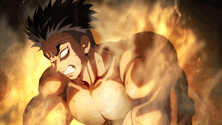
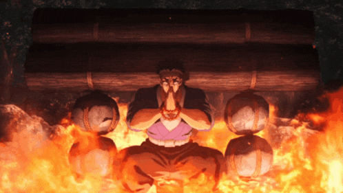

Испытание «Каменная воля»
Испытание «Каменная воля» помогает достичь полного спокойствия и внутренней концентрации. Сначала ледяной поток и пламя кажутся невыносимыми, но правильная техника дыхания делает их мягкими.
Первый этап
Медитация под ледяным водопадом, давящим на тебя и подавляющим дыхание. С помощью техники повторения выравниваем дыхание, повышаем температуру тела и доводим концентрацию до максимума.
Второй этап
Медитация на пылающих углях и бревнах. Задача — охладить тело, выровнять дыхание и довести концентрацию до полной стабильности.
Третий этап
Вместо того чтобы тушить пламя, и пытаться стать невольным ты должен будешь толкнуть валун. Изучив одну из полезных техник ты должен будешь попробовать немного сдвинуть валун , его тяжесть велика и твоя воля должна быть такой же.